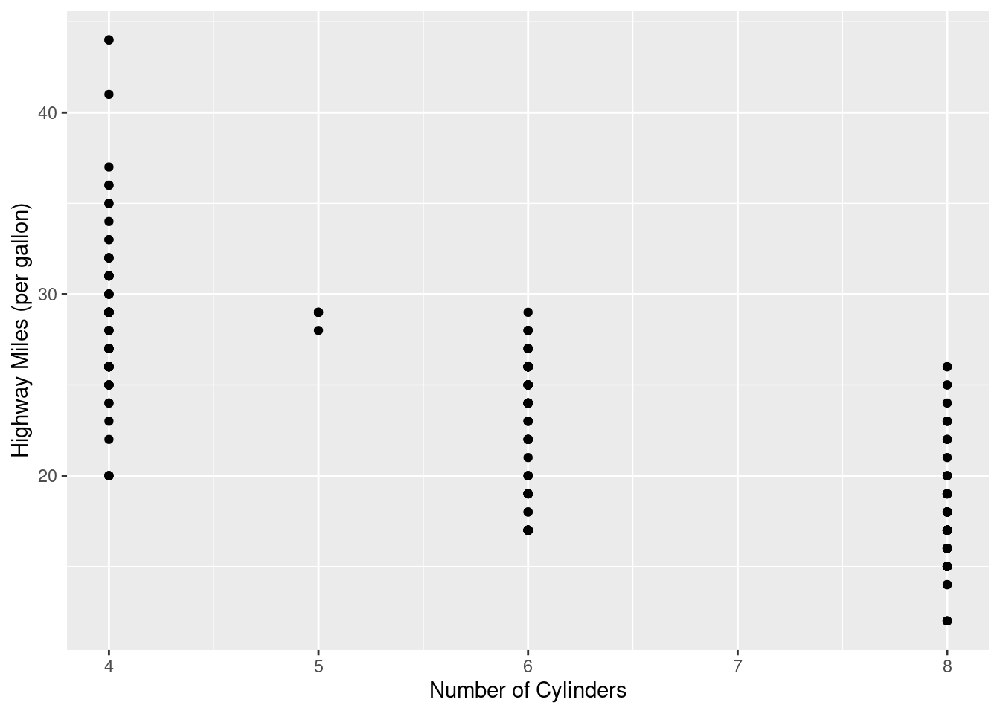
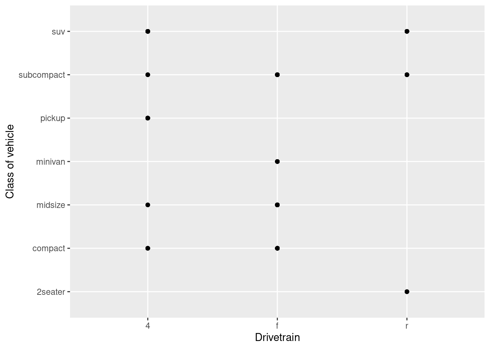
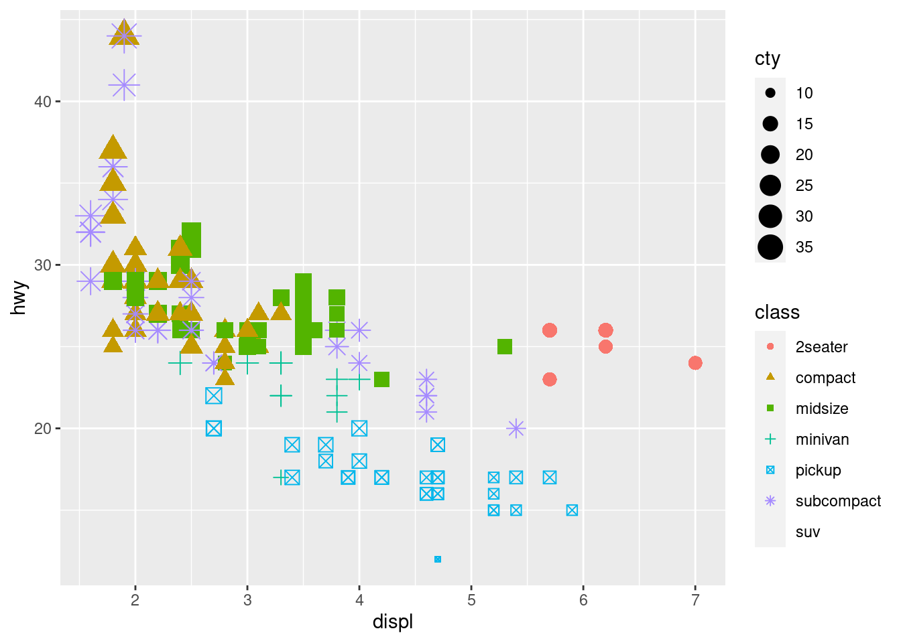
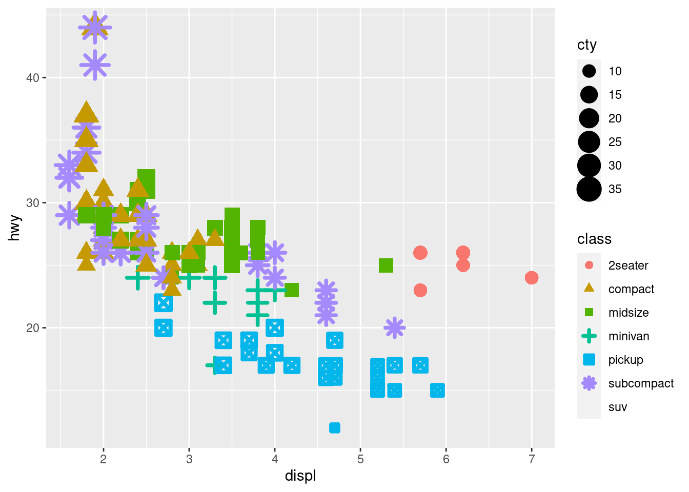
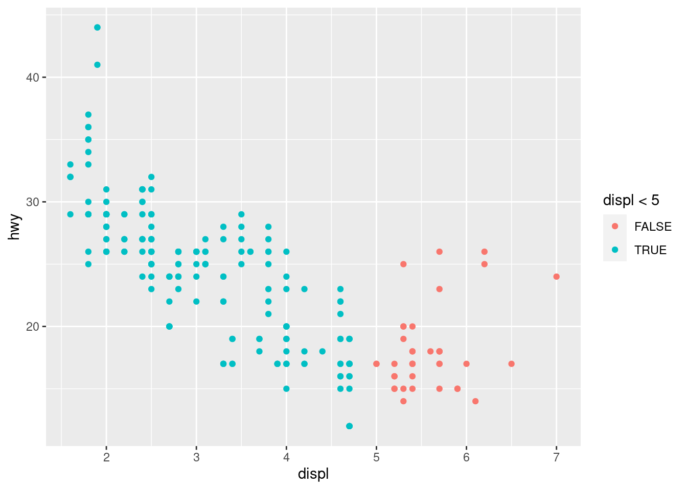
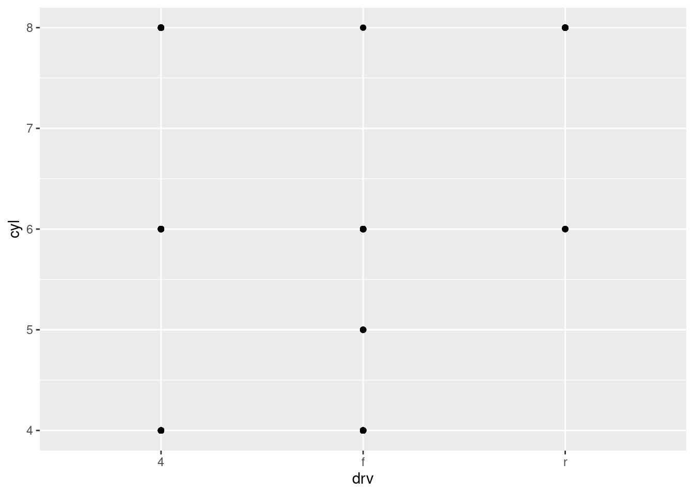
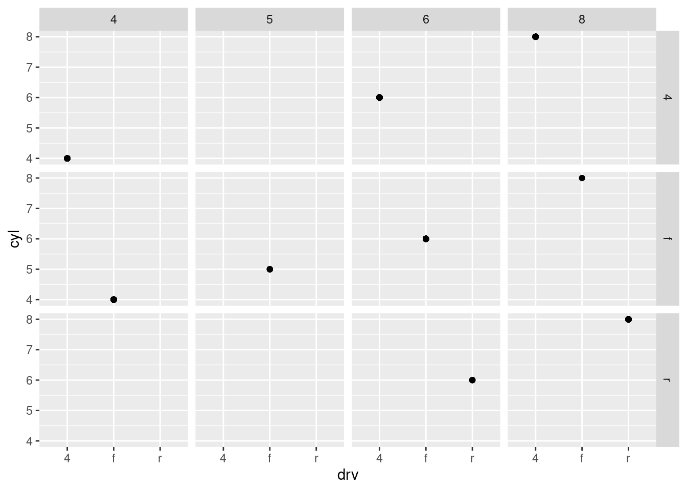
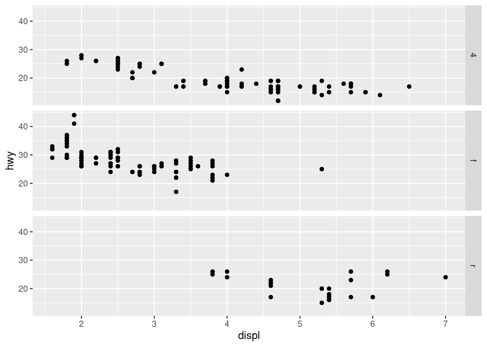
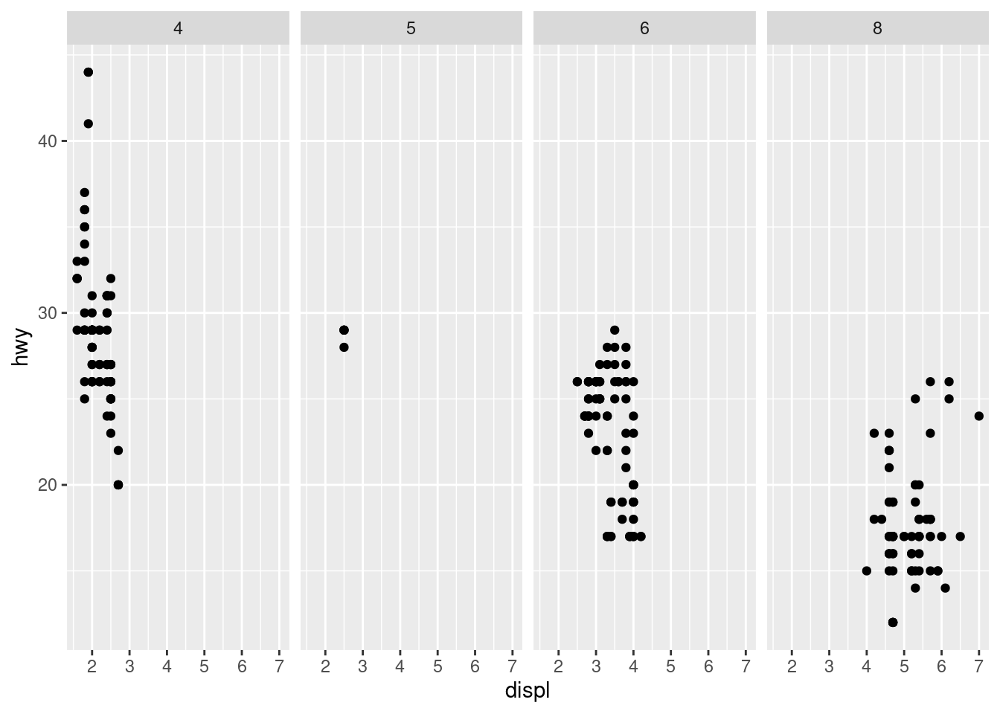

3 Data Visualization
3.1 Introduction
3.1.1 Prerequisites
3.2 First steps
3.2.1 The mpg data frame
3.2.2 Creating a ggplot
3.2.3 A graphing template
3.2.4 Exercises
3.2.4.1 Run ggplot(data = mpg). What do you see?
empty gray background
3.2.4.2 How many rows are in mpg? How many columns?
There are 234 rows and 11 cols.
3.2.4.3 What does the drv variable describe? Read the help for ?mpg to find out.
the type of drive train, where f = front-wheel drive, r = rear wheel drive, 4 = 4wd
3.2.4.4 Make a scatterplot of hwy vs cyl.
3.2.4.5 What happens if you make a scatterplot of class vs drv? Why is the plot not useful?

Not useful, both variables are categorical, no continuous relationship exists between variables.
3.3 Aesthetic Mapping
3.3.1 Exercises
3.3.1.1 What’s gone wrong with this code? Why are the points not blue?
ggplot(data = mpg) +
geom_point(mapping = aes(x = displ, y = hwy, color = "blue"))By assigning color inside aes, color is mapped to a variable, since only a factor of len 1 is present (“blue”), it is mapped to the first color in the default palette, red.
3.3.1.2 Which variables in mpg are categorical? Which variables are continuous? (Hint: type ?mpg to read the documentation for the dataset). How can you see this information when you run mpg?
Categorical: Manufacturer, model, year, trans, drv, fl, class; Continuous: disp, cty, hwy, cyl
Described under colname, inferred by type, for ex. chr is a character, and thus a categorical label. Year, although an int, is in this case categorical. Cyl is difficult, it seems like a discrete category (there are no 4.5 cylinder cars), however cylinder count is continous with regards to engine power. A more appropriate measure might be engine displacement.
3.3.1.3 Map a continuous variable to color, size, and shape. How do these aesthetics behave differently for categorical vs. continuous variables?
ggplot(data = mpg) +
geom_point(mapping = aes(x = displ, y = hwy, color = class, size=cty, shape = class))Warning: The shape palette can deal with a maximum of 6 discrete values because
more than 6 becomes difficult to discriminate; you have 7. Consider
specifying shapes manually if you must have them.Warning: Removed 62 rows containing missing values (geom_point).
3.3.1.4 What happens if you map the same variable to multiple aesthetics?
The variables legends are combined.
3.3.1.5 What does the stroke aesthetic do? What shapes does it work with? (Hint: use ?geom_point)
ggplot(data = mpg) +
geom_point(mapping = aes(x = displ, y = hwy, color = class, size=cty, shape = class),
stroke = 2)Warning: The shape palette can deal with a maximum of 6 discrete values because
more than 6 becomes difficult to discriminate; you have 7. Consider
specifying shapes manually if you must have them.Warning: Removed 62 rows containing missing values (geom_point).
Changes the thickness of line border on points.
3.3.1.6 What happens if you map an aesthetic to something other than a variable name, like aes(colour = displ < 5)? Note, you’ll also need to specify x and y.

Colors points meeting that condition in one color, points not meeting that condition in another. FALSE is first alphabetically, so receives first color in palette (red) and TRUE receives blue.
3.4 Common Problems
3.5 Facets
3.5.1 Exercises
3.5.1.1 What happens if you facet on a continuous variable?
A facet is created for every occurrence of a unique continuous variable.
3.5.1.2 What do the empty cells in plot with facet_grid(drv ~ cyl) mean? How do they relate to this plot?

Empty cells (shown below) indicate that no data is present for that particular pair of variables, that is, there are no 4-wheel drive 5 cylinder vehicles, nor 4 or 5 cylinder rear wheel drive vehicles. This is reflected in the above plot, where no point is present for those variable combinations combinations.

3.5.1.3 What plots does the following code make? What does . do?
ggplot(data = mpg) +
geom_point(mapping = aes(x = displ, y = hwy)) +
facet_grid(drv ~ .)
ggplot(data = mpg) +
geom_point(mapping = aes(x = displ, y = hwy)) +
facet_grid(. ~ cyl)
Facet grid uses a row by column ordering. In the first plot, it will show facets by drive (f, r, 4) by row. The second plot will show cylinder count by column. The . is a dummy variable indicating no data. The code will not run without the dummy variable.
3.5.1.4 Take the first faceted plot in this section:
ggplot(data = mpg) +
geom_point(mapping = aes(x = displ, y = hwy)) +
facet_wrap(~ class, nrow = 2)
What are the advantages to using faceting instead of the colour aesthetic? What are the disadvantages? How might the balance change if you had a larger dataset?
Groups differentiated by color become difficult to discern when using more than 6 or more colors. Additionally, poor color choices can result in an inability to discern differences by group for those with colorblindness. Facets provide an unambiguous way of separating data by a categorical variable. It can make a visual comparison more difficult, which can be resolved by keeping each variable aligned along a common orientation (row vs column). With a larger number of variables, facets may become cumbersome.
3.5.1.5 Read ?facet_wrap. What does nrow do? What does ncol do? What other options control the layout of the individual panels? Why doesn’t facet_grid() have nrow and ncol arguments?
Facet_wrap wraps a 1D ribbon of panels into 2D. The number of rows (or columns) is dictated by nrow and ncol respectively. facet_grid() doesn’t have nrow or ncol arguments because it is a multivariate facet, with col and row length dictated by the number of facets for that particular variable. In the event that there is only one variable, then for a facet on column, the row = 1, and for a facet on row, the col = 1.
3.5.1.6 When using facet_grid() you should usually put the variable with more unique levels in the columns. Why?
Visualizations are traditionally in landscape orientation. This by putting the variable with more unique levels in the columns you ensure the resultant visualization follows landscape orientation.